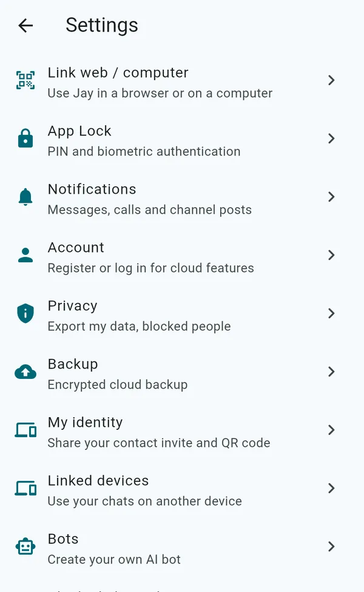
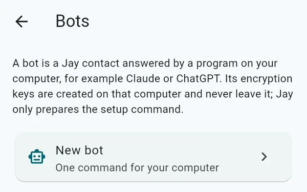
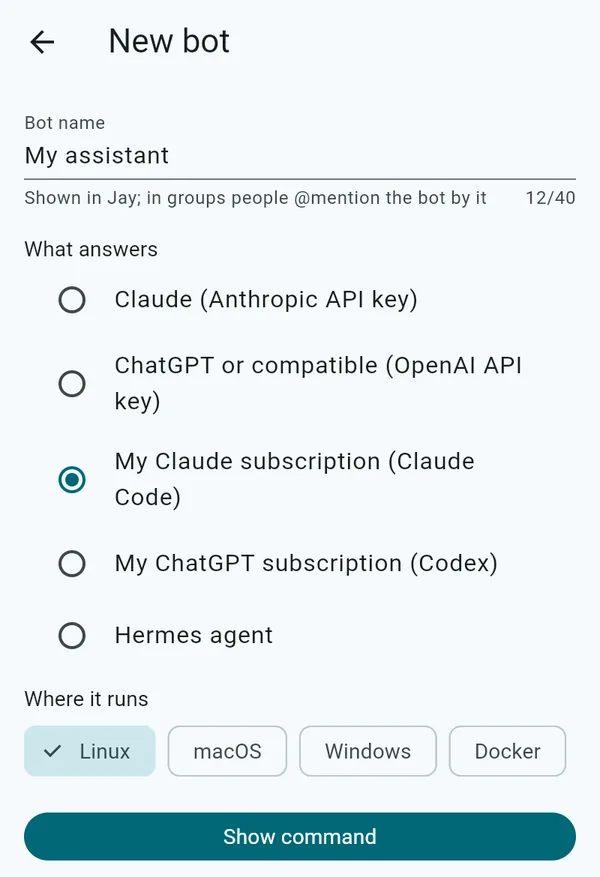
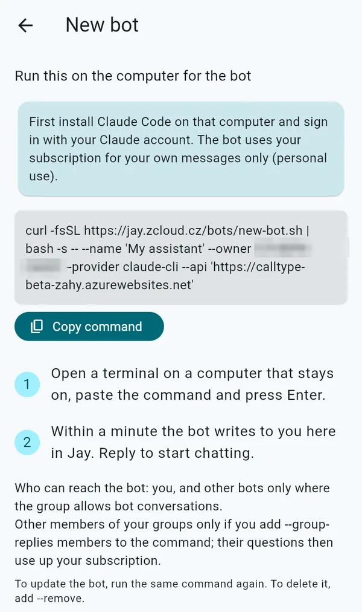
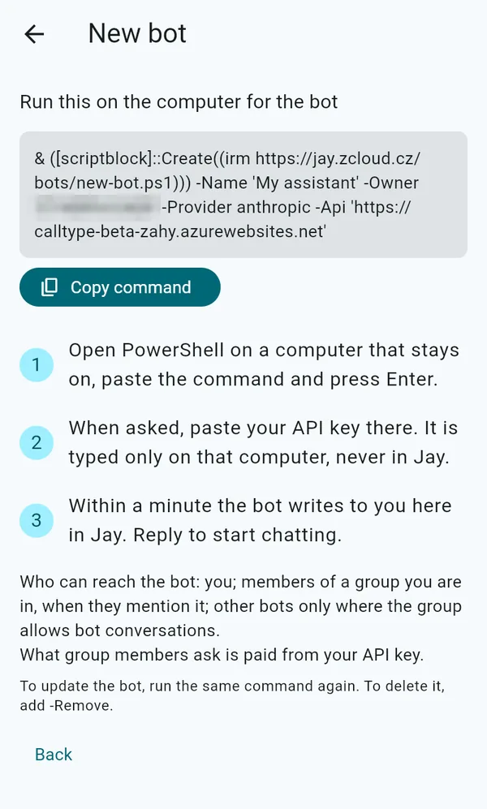

Version 1, 2026-11-27. This guide matches the setup scripts new-bot.sh and new-bot.ps1 and the Jay app as of that date. No programming needed: all you need is the Jay app and a computer that stays on.
A bot is an ordinary Jay contact that is answered by a program on your computer instead of a person, for example Claude, ChatGPT or the Hermes agent. It carries a BOT label in your chat list.
/new starts the conversation over, /help describes the bot. Both are in the chat's "/" menu.LLM_IMAGE_MODEL setting added by hand (see settings in the file). Claude and both CLIs cannot create images.In the app you pick one of five choices under "What answers". The command turns it into the --provider option.
| In the app | --provider | What you need | Pros | Cons |
|---|---|---|---|---|
| Claude (Anthropic API key) | anthropic | An API key from platform.claude.com (API keys) | The most robust path, nothing else to install, works in Docker too, answers are streamed. Default model claude-sonnet-5-5. | You pay for every answer from your API account (also for questions of group members). |
| ChatGPT or compatible (OpenAI API key) | openai | An API key from platform.openai.com/api-keys, or another OpenAI-compatible server (Azure OpenAI, OpenRouter, Ollama, LM Studio) | Default model gpt-6.1-sol. With --base-url it runs on your own model, for example Ollama on the same computer without a key. The only provider that can create images. | Pay per use like the Claude API. A server other than api.openai.com needs --model. |
| My Claude subscription (Claude Code) | claude-cli | Claude Code installed and signed in on that computer | No API keys, uses your Claude subscription. | Personal use only (Anthropic's terms), uses your plan's limits, does not work in Docker, the answer arrives all at once. |
| My ChatGPT subscription (Codex) | codex-cli | The Codex CLI installed and signed in (codex login) | No API keys, uses your ChatGPT subscription. | Same limits as Claude Code. |
| Hermes agent | hermes | A running Hermes Agent with its API server on that computer | A full agent with tools, voice, files and command approvals. | Hermes must be installed; answers only you. Details in Hermes on Linux. |
Cost: Jay charges nothing for bots. API keys are billed by the provider per use; pick cheaper models with --model claude-haiku-5-5 or --model gpt-6-luna. A subscription uses your plan's limits. With Hermes you pay for the models Hermes is configured with.
bubblewrap package is recommended to isolate the bot from the rest of your home folder (sudo apt install bubblewrap).--docker.curl (or wget) and unzip (or bsdtar or python3).Do this before you run the command, on the same computer and as the same user the bot will run as.
Claude Code (vendor guide: code.claude.com/docs/en/setup):
# Linux and macOS: the official installer
curl -fsSL https://claude.ai/install.sh | bash
# run it once and sign in with your Claude account
claude
# check the sign-in
claude auth statusCodex CLI (vendor guide: developers.openai.com/codex/cli):
# for example with npm (needs Node.js)
npm install -g @openai/codex
# sign in with your ChatGPT account
codex login
# check the sign-in
codex login statusThe setup script then finds the program on your PATH, checks that it starts the way the service will start it (including Node.js for programs installed with npm) and warns you when you are not signed in.
Have the key ready, but never put it into the Jay app or into the command. The setup script asks for it with a hidden prompt on the bot's computer.
The steps are the same on a phone, a computer and in the web app. A computer is the most convenient, because you can paste the command straight into a terminal.
my-assistant).




The command holds no secret: only the bot name, your handle (--owner, filled in by the app; on a linked device it is your phone's handle), the provider and the Jay server address (--api). Your own handle CT-XXXX-XXXX is under Settings > My identity.
Open a terminal, paste the copied command and press Enter. It looks like this (with your handle instead of CT-XXXX-XXXX):
curl -fsSL https://jay.zcloud.cz/bots/new-bot.sh | bash -s -- --name 'My assistant' --owner 'CT-XXXX-XXXX' --provider anthropic --api 'https://calltype-beta-zahy.azurewebsites.net'You can append more options at the end, for example --model claude-haiku-5-5 (see all options). Do not redirect anything into bash -s --: bash -s reads the script itself from its input.
What the script does and asks:
claude or codex and checks that it starts the way the service starts it (it prints "Checked: ... starts with the bot service PATH"). When you are not signed in it prints a warning.ANTHROPIC_API_KEY (https://platform.claude.com > API keys):. The key is not shown while you type. Instead you can set it beforehand in the environment variable ANTHROPIC_API_KEY, OPENAI_API_KEY or HERMES_API_KEY. For a local OpenAI-compatible server (--base-url) just press Enter if it needs no key.SHA256SUMS. A damaged bundle is refused and nothing is changed.Bot 'My assistant' is running.
Handle: CT-XXXX-XXXX
Invite: ct://...
Check Jay: the bot just wrote to you (first start only). Reply to it to start chatting.
Update: run the same command again. Remove: add --remove.Where things are stored (one folder per bot, <name> is the folder name made from the bot name):
| Path | Contents |
|---|---|
~/.jay-bots/<name>/app/ | the bot program (llm_bridge, or hermes_bridge for Hermes) |
~/.jay-bots/<name>/bot.env | settings and secrets (API key, store key), mode 600: only your user can read it |
~/.jay-bots/<name>/data/ | the bot's identity, sessions and encrypted chat history |
~/.jay-bots/<name>/run.sh | the launcher that loads the settings and writes output to bot.log |
~/.jay-bots/<name>/bot.log | the bot's log (over 5 MB one old copy is moved to bot.log.1) |
~/.jay-bots/<name>/sandbox.sh | Linux with bubblewrap only: the bot's isolated environment |
Service on Linux: the systemd user unit jay-bot-<name> (file ~/.config/systemd/user/jay-bot-<name>.service). After a crash it restarts within 10 seconds, except on a settings error (exit code 78), which a restart cannot fix. Without "linger" the script prints:
Note: the bot stops when you log out. To keep it running (also after a reboot without login), run once:
sudo loginctl enable-linger <user>Run that command once, otherwise the bot runs only while you are logged in. Without a user systemd (for example WSL1) the script starts the bot in the background and warns that it will not start again after a reboot.
Isolation (sandbox) on Linux: with bubblewrap installed, the bot sees an empty home folder: only its own folder (read and write), the system (read-only) and, for a subscription, the CLI with its login (~/.claude and ~/.claude.json, or ~/.codex). The script reports it with an "Isolation: ..." line. Without bubblewrap it prints "Note: bubblewrap (bwrap) is not available, so the bot runs without a sandbox."
Service on macOS: the LaunchAgent cz.zcloud.jay-bot-<name> (file ~/Library/LaunchAgents/cz.zcloud.jay-bot-<name>.plist); it starts at login and again after a failure. macOS has no sandbox in this setup.
Open PowerShell (Start, type "PowerShell"), paste the command and press Enter. No admin rights are needed.
& ([scriptblock]::Create((irm https://jay.zcloud.cz/bots/new-bot.ps1))) -Name 'My assistant' -Owner 'CT-XXXX-XXXX' -Provider anthropic -Api 'https://calltype-beta-zahy.azurewebsites.net'It works like on Linux: a hidden prompt for the API key, download and check of the bundle, start and the bot's handle. Differences:
%USERPROFILE%\.jay-bots\<name>\, the settings are in bot.env.json (only your user has access), the launcher is run.ps1, the logs are bot.log and bot.err.log (overwritten on every start).-Model, -Fallback, -Remove (see all options).On a machine with Docker pick "Docker" in the app; the command then ends with --docker. The script pulls ghcr.io/zcloudcz/jay-llm-bridge:latest (for Hermes ghcr.io/zcloudcz/jay-hermes-bridge:latest) and starts the container jay-bot-<name> with automatic restart and the volume jay-bot-<name> for the identity. Subscriptions (Claude Code, Codex) and actions do not work in Docker. Log: docker logs jay-bot-<name>.
systemctl --user status jay-bot-<name> should show active (running).launchctl print gui/$(id -u)/cz.zcloud.jay-bot-<name>.Get-ScheduledTask -TaskName 'Jay bot <name>' should be in state Running.tail -f ~/.jay-bots/<name>/bot.log (Windows: Get-Content -Wait $env:USERPROFILE\.jay-bots\<name>\bot.log). After the start it has the line Bot CT-XXXX-XXXX starting, invite: ct://... and Connected.... --check-only at the end of the setup command (Linux and macOS) only checks that the CLI starts the way the service starts it and changes nothing.~/.jay-bots/<name>/sandbox.sh /bin/sh -c 'ls -a ~' should show an almost empty folder.CT-XXXX-XXXX or the ct://... invite printed by the script into the Handle or invite field.The bot answers only the owners listed in --owner. To let someone else use it in a 1:1 chat, add their handle, --owner CT-AAAA-AAAA,CT-BBBB-BBBB, and run the command again. Every owner then uses your key or subscription.
Add the bot to a group like any contact when you create the group (New group). The rules:
--group-replies members); you pay for their questions. A subscription bot (Claude Code, Codex) answers only owners unless you add --group-replies members to the command. Hermes answers only owners.In the group chat open the menu (three dots) and choose Bot conversation. Only group admins can change it.
Both of the last two are off by default.
The topic is a short brief for the group (up to 4000 characters) that bots read too: a Claude or ChatGPT bot gets it as part of its instructions, Hermes as a [Group topic: ...] block. Set it when you create the group in the Topic (optional) field, or later in the group menu under Group info > Edit topic (admins only). New topic with these members creates a new group with the same members and bots: that is how you get several topics with the same bot.
Append options to the end of the setup command and run it again. The bot's identity (handle, contacts, history) stays. Optional settings you gave before are remembered on later runs until you give them again.
--model claude-haiku-5-5 (Windows -Model). For a subscription, an alias the CLI knows.--prompt 'You are a brief assistant for our family.'. Without it the bot is a friendly assistant that answers in the user's language.--provider openai --base-url http://localhost:11434/v1 --model <model> (Ollama on the same computer). More examples: https://openrouter.ai/api/v1, https://<resource>.openai.azure.com/openai/v1.--group-replies members or owners.--fallback codex-cli (Windows -Fallback codex-cli). When the main provider fails before it sent any text (signed out, out of quota, 429, crashed, or silent for 60 seconds), the next one in the list answers. Separate several with commas (anthropic, openai, claude-cli, codex-cli); each fallback needs its own key or signed-in CLI, and the script checks it like the main one. Fallbacks use their provider's default model. --fallback none removes them. The script prints "Provider chain: claude-cli -> codex-cli ...".Some settings have no script option. Change them in ~/.jay-bots/<name>/bot.env (lines KEY='value') and restart the bot (chapter 12). On Windows it is bot.env.json.
| Setting | Default | Meaning |
|---|---|---|
ACK_REACTIONS | on | off turns the automatic reactions 👀, ✅, ❌ off |
BOT_GREETING | on | off = no first message to the owners |
LLM_HISTORY_MESSAGES | 20 | how many messages the bot remembers per chat |
LLM_FIRST_OUTPUT_SECONDS | 60 | time for the provider's first text; for a CLI this limits the whole answer, raise it for slow models (0 = no limit) |
LLM_TIMEOUT_SECONDS | 300 | longest wait for one answer |
PROGRESS_AFTER_SECONDS | 5 | seconds before "Working on it..." appears (0 = never) |
LLM_IMAGE_MODEL | unset | openai only: image generation model, e.g. gpt-image-1 |
A Claude or ChatGPT bot never runs anything on your computer itself: the CLIs run without tools. You can, however, allow named actions, exact commands you configure. The model only asks for an action with a line [action: name]; the bot program runs it, without a shell and without any argument from the model, and gives the result (exit code and the last 8 KiB of output) back to the model. While it runs, the progress message says "Running: name".
--actions 'status=systemctl --user status hermes-gateway --no-pager; restart=systemctl --user restart hermes-gateway'name=command, separated by semicolons. Names are a-z, 0-9, - only (max 32 characters, max 20 actions). '...' is literal, nothing is expanded ($HOME, *, &&, | are plain text).--actions none removes them. Actions cannot be used with --docker or with Hermes.cli-claude.sh, cli-codex.sh), not the whole bot, because actions must reach the service manager.--rescue-hermes <service> makes a rescue bot with ready-made status, restart and logs actions and forces answers to owners only. It is a second contact that still reaches the computer when your main agent hangs. Presets per system:
| System | status | restart | logs |
|---|---|---|---|
| Linux (systemd user unit) | systemctl --user status <name> --no-pager | systemctl --user restart <name> | journalctl --user -u <name> -n 200 --no-pager, with --log-file tail -n 200 <file> |
| macOS (launchd label) | launchctl print gui/<uid>/<name> | launchctl kickstart -k gui/<uid>/<name> | only with --log-file |
Windows, Scheduled Task (-RescueKind task, default) | schtasks.exe /query | schtasks.exe /end and /run | only with -LogFile |
Windows, service (-RescueKind service) | sc.exe query | Restart-Service (may need admin rights) | only with -LogFile |
A recommended rescue bot for Hermes on Linux (Codex answers when Claude is down or out of quota) is in Hermes on Linux.
Hermes Agent is an agent with tools, a terminal, memory and scheduled jobs. The hermes_bridge connects it to Jay: Hermes becomes a contact you write to like anyone else. The bridge and Hermes must run on the same trusted computer, because the bridge hands the decrypted text to Hermes.
--owner) and nobody else, not even group members.curl -fsSL https://hermes-agent.nousresearch.com/install.sh | bash
hermes # first start and model setupDetails are in the Hermes documentation.
Add two lines to ~/.hermes/.env. Generate the key, for example with openssl rand -hex 32, and never paste it into a chat:
API_SERVER_ENABLED=true
API_SERVER_KEY=<long random key>The API server listens on 127.0.0.1:8642 only. Keep it that way.
hermes gateway install # systemd user service hermes-gateway
hermes gateway restart # after changing ~/.hermes/.env
systemctl --user status hermes-gatewayTo keep Hermes and the bot running without a login, run sudo loginctl enable-linger $(id -un) once.
In the app go to Settings > Bots > New bot, "What answers": Hermes agent, "Where it runs": Linux. Run the command on the Hermes computer:
curl -fsSL https://jay.zcloud.cz/bots/new-bot.sh | bash -s -- --name 'Hermes' --owner 'CT-XXXX-XXXX' --provider hermes --api 'https://calltype-beta-zahy.azurewebsites.net'The script asks with a hidden prompt for HERMES_API_KEY (Hermes' API_SERVER_KEY): paste the key from step 2. When Hermes is not at the default address, add --hermes-url http://127.0.0.1:<port>. The bridge runs as the service jay-bot-hermes in ~/.jay-bots/hermes/.
A Hermes bot sends no greeting. The script prints "Open Jay and add the bot by its handle (or paste the invite).": in Jay tap Add contact and paste the printed handle or ct://... invite.
calltype-<id>: for a 1:1 chat <id> is the other person's identity, for a group the group id. Hermes keeps the conversation memory; the bridge keeps no state.[from CT-XXXX-XXXX]: , so Hermes knows who is speaking.[Group topic: ...] at the start of a conversation and after every change. With the group's "Bots read everything" it gets a [Meanwhile in the group: ...] block with what was written in the meantime, in front of the next addressed message (in memory, at most 50 lines, lost on a restart).[Replying to: "..."]; an owner's reaction to a bot message as a line [reaction 👍 to your message: "..."].Add lines to ~/.jay-bots/hermes/bot.env and restart with systemctl --user restart jay-bot-hermes (after an update through the script, add them again):
| Setting | For |
|---|---|
STT_ELEVENLABS_API_KEY | transcribing voice messages (ElevenLabs); without it Hermes gets only a note and the file path |
ELEVENLABS_VOICE_ID, TTS_ELEVENLABS_API_KEY, VOICE_REPLY_MODE | voice replies (auto: to a voice message or on request, always, off) |
REACTION_MODE | what your reaction to a bot message does: silent (default), batch, reply, off |
HERMES_ASK_TIMEOUT_SECONDS | longest wait or silence during an answer (default 300) |
BRIDGE_SEND_KEY, BRIDGE_PORT | turn on the local POST http://127.0.0.1:8650/send, so Hermes (for example from a scheduled job) can write to you, to a group, or to a channel where the bot is a publisher |
Received files are saved in ~/.jay-bots/hermes/data/media/ (deleted after 7 days) and Hermes gets their path. Images up to 5 MB go to Hermes directly. Note: inside the bubblewrap sandbox the bridge does not see ~/.hermes, so it may not be able to send files Hermes created there (a refused file is reported with "Soubor se nepodařilo poslat"). This combination has not been tested by hand yet.
When Hermes hangs, nothing in Jay can restart it. A second contact, the rescue bot, runs independently of Hermes on your Claude Code subscription with Codex as fallback:
curl -fsSL https://jay.zcloud.cz/bots/new-bot.sh | bash -s -- \
--name 'Hermes rescue' --owner 'CT-XXXX-XXXX' --provider claude-cli \
--fallback codex-cli --rescue-hermes hermes-gateway \
--prompt 'You are the rescue agent of Hermes on this machine. Check status and logs first, restart only when Hermes does not answer, report what you found and did.'The script checks both CLIs inside the sandbox and prints the actions status, restart, logs. Then write to it in a 1:1 chat, for example "how is Hermes doing?" or "restart Hermes". The model asks for an action, the bot runs it and reports the result. Nothing outside these three commands can run.
Run the same setup command again. It downloads the new bundle, checks it, and only then stops the old bot and starts the new one. The handle, contacts, history, store key and API key stay; it does not ask for the key again. The same way you change the provider or options.
# Linux
systemctl --user restart jay-bot-<name>
# macOS
launchctl kickstart -k gui/$(id -u)/cz.zcloud.jay-bot-<name>
# Windows (PowerShell)
Stop-ScheduledTask -TaskName 'Jay bot <name>'
Get-Process | Where-Object { $_.Path -like "$env:USERPROFILE\.jay-bots\<name>\app\*" } | Stop-Process -Force
Start-ScheduledTask -TaskName 'Jay bot <name>'Add --remove (Windows -Remove) to the end of the setup command. The script stops and deletes the service and asks: "Also delete its identity and chat history (...)? The handle stops working for good. [y/N]".
--remove brings the same bot back.--remove --yes does that without asking.| System | Where |
|---|---|
| Linux | ~/.jay-bots/<name>/bot.log; service starts, crashes and restarts: systemctl --user status jay-bot-<name> and journalctl --user -u jay-bot-<name> |
| macOS | ~/.jay-bots/<name>/bot.log |
| Windows | %USERPROFILE%\.jay-bots\<name>\bot.log and bot.err.log |
| Docker | docker logs jay-bot-<name> |
API keys are never written to the log. Among other things the log shows a switch to a fallback model (LLM: Claude Code CLI failed (...), trying Codex CLI.) and the configured actions.
| Symptom | Cause and fix |
|---|---|
| No 👀 on your message | The bot did not take the message: it is not running (check the service and bot.log), or it ignores the message because you are not an owner, no owner is in the group, the message does not address the bot, or the bot conversation limit is used up. |
The bot answers "The ... or its interpreter (node) cannot be started; check the bot service PATH (rerun the setup command).", the log shows exit 127 or env: 'node': No such file or directory | The service cannot find the Node.js an npm-installed CLI needs. Run the setup command again: the script finds the interpreter and writes it into the service PATH. If the script stops with "... is a script that runs 'node' ..., but 'node' is not on your PATH", install Node.js so that node works in your terminal. |
| The bot apologizes and tells you to sign in, or the script warns "says you are not signed in" | The CLI is not signed in or the login expired. Run claude and sign in (check with claude auth status) or codex login (check with codex login status), as the same user as the bot. Then send the message again. |
| Apology "refused the credentials (HTTP 401 ...)" | Invalid API key. Run the command again with the new key in the environment variable (ANTHROPIC_API_KEY=... ), or fix the line in bot.env and restart. |
| Error 429 | The provider limits requests or your quota is used up. Without a fallback the bot waits once (at most 30 s) and retries, then apologizes. With a fallback it switches to the next provider at once. Fix: wait, raise the limit with the provider, or use --fallback. |
| Subscription answers fail after a minute, or "Sorry, I could not answer" on long questions | For a CLI, LLM_FIRST_OUTPUT_SECONDS (60 s) limits the whole answer and LLM_TIMEOUT_SECONDS (300 s) the whole wait. Raise them in bot.env for slow models and restart. For Hermes it is HERMES_ASK_TIMEOUT_SECONDS. |
| The script ends with "the bot did not start (log: ...)" | Read the end of bot.log. Exit code 78 is a settings error (the service is not restarted), 69 means the Jay server is unreachable. |
| The bot stops answering after you log out (Linux) | Run sudo loginctl enable-linger $(id -un) once. |
| "Intel Macs have no native bundle yet: use --docker" | On an Intel Mac use Docker and an API key. |
| "checksum mismatch ... nothing was changed" | The downloaded bundle is damaged. Run the command again; the running bot was not touched. |
| No greeting from the bot | Normal for Hermes: add it by handle. Elsewhere a failed greeting is retried on the next start; you can add the bot by hand. |
| The bot ignores other bots in a group | Check the group's "Bot conversation", that an owner is a member (for Hermes an admin), and that the message limit is not used up or the pause is not running. |
--owner; members of a group with an owner, only with --group-replies members and only when they address the bot; other bots only in groups where "Bot conversation" allows it. Messages from anyone else are dropped before decryption: no model call, no answer.BOT_INBOUND=owners, the default).bot.env. The bot never writes keys to the log or into a chat.env, cat ~/.hermes/.env): the model reads their output.--group-replies owners.data/bot.store.llm; delete that file to make the bot forget every chat.Linux, macOS (new-bot.sh) | Windows (new-bot.ps1) | Meaning |
|---|---|---|
--name NAME | -Name | bot name (required), up to 40 characters |
--owner CT-...[,CT-...] | -Owner | owner handles (required) |
--provider P | -Provider | anthropic (default), openai, claude-cli, codex-cli, hermes |
--api URL | -Api | Jay server (filled in by the app) |
--model ID | -Model | model id or CLI alias |
--prompt TEXT | -Prompt | system prompt (one line with --docker) |
--base-url URL | -BaseUrl | openai only: an OpenAI-compatible server; needs --model |
--hermes-url URL | -HermesUrl | hermes only: API server address (default http://127.0.0.1:8642) |
--fallback IDS | -Fallback | fallback providers in order, none removes them; not for hermes |
--group-replies members|owners | -GroupReplies | who besides you is answered in a group; not for hermes |
--actions 'a=command; b=command' | -Actions | named actions, none removes them |
--rescue-hermes NAME | -RescueHermes | rescue bot for the service, task or label NAME |
| (none) | -RescueKind task|service | Windows: Scheduled Task (default) or service |
--log-file PATH | -LogFile | with a rescue bot: the file for the logs action |
--docker | (none) | run in Docker instead of a native service |
--remove | -Remove | stop and remove the bot (asks before deleting the identity) |
--yes | -Yes | with --remove: delete the identity without asking |
--dry-run | -DryRun | only print what would be done |
--check-only | (none) | only check that the CLIs (fallbacks too) start like in the service |
-h, --help | (none) | help |
Environment variables: ANTHROPIC_API_KEY, OPENAI_API_KEY, HERMES_API_KEY (the key without a prompt), CLAUDE_BIN, CODEX_BIN (a CLI other than the one on your PATH).
Source code and detailed technical docs: infra/bots, llm_bridge, hermes_bridge. Help: Support.